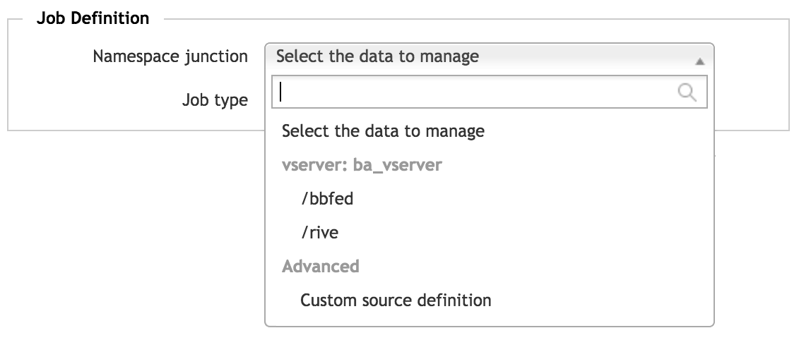
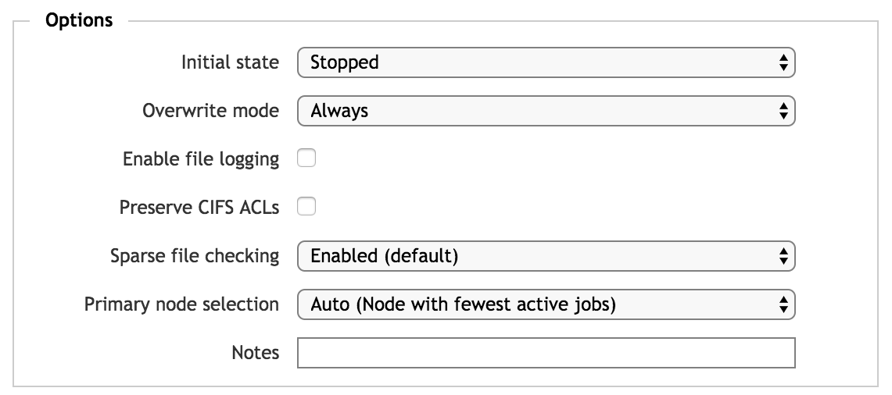
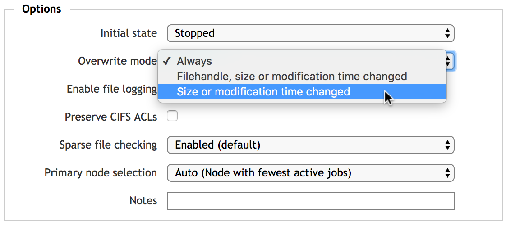
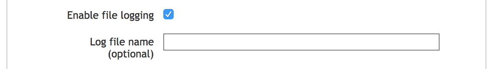
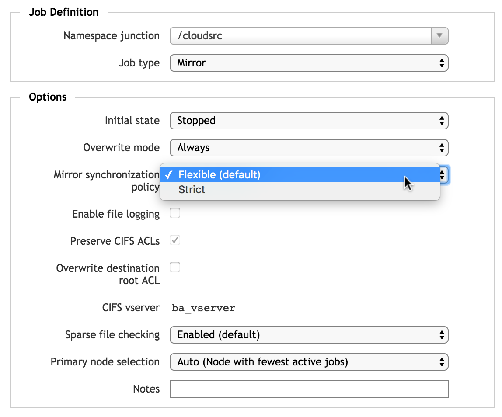
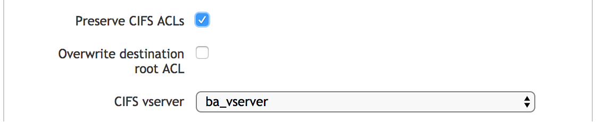
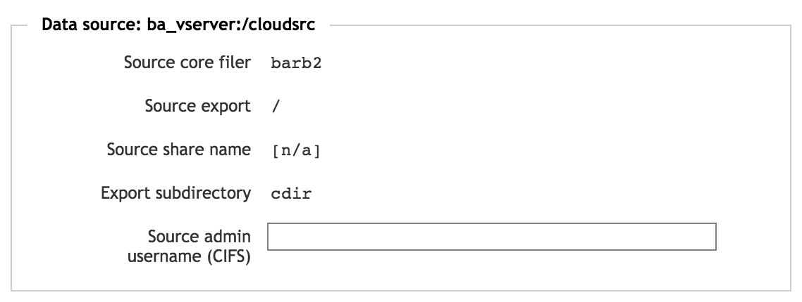
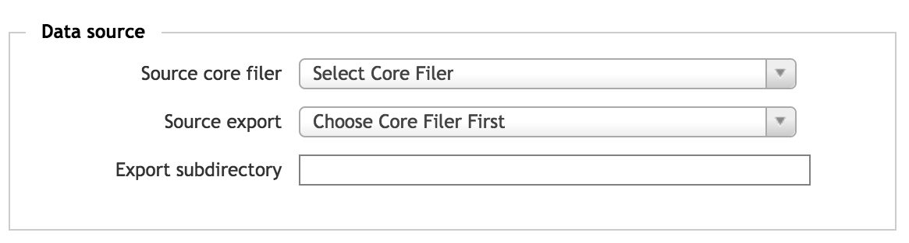
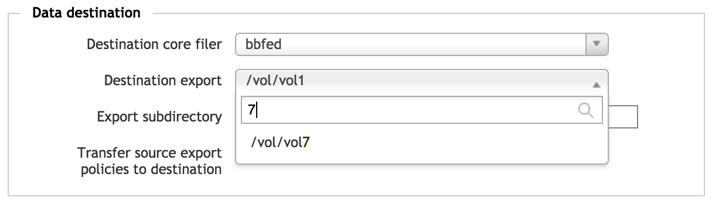
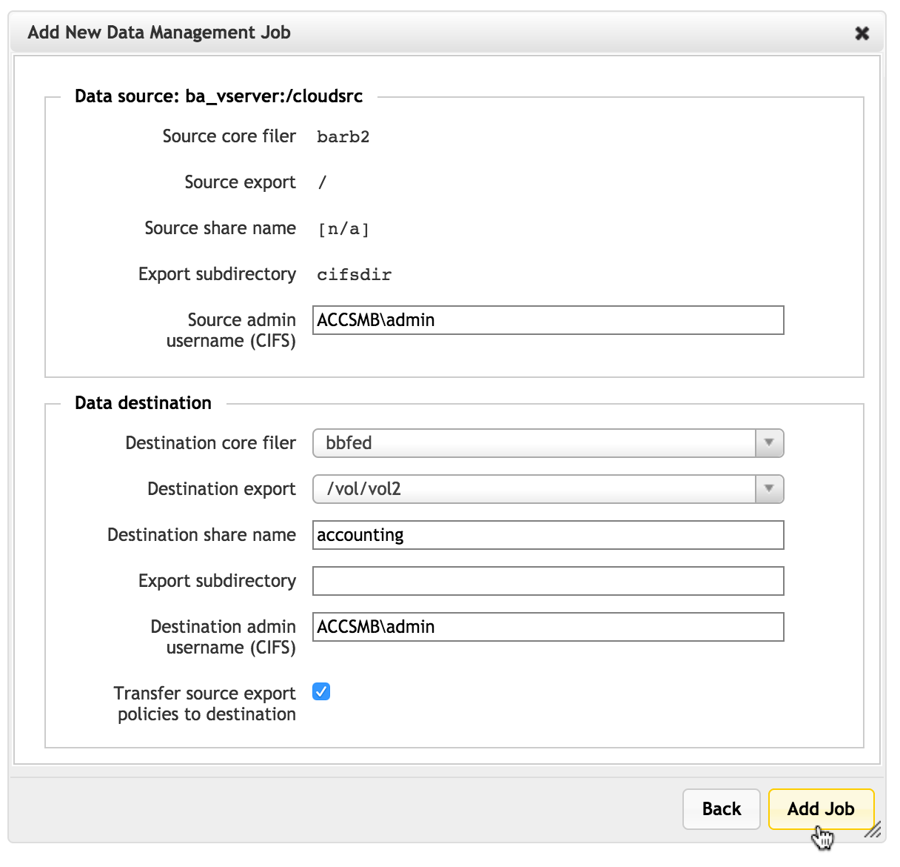

Creating a New FlashMove or FlashMirror Job¶
A wizard walks you through creating a new FlashMove job or establishing a new FlashMirror.
In the Data Management tab of the Avere Control Panel, click the Create button at the top of the page.
Note
You also can open the data management job wizard from the VServer > Namespace page on the Settings tab. Select the junction that will be the source for the move or mirror job, then click the Move/Mirror button on the Namespace page.

First page of the Add New Data Management Job wizard
Migration Checklist¶
Before starting the wizard, make sure you know these details about the filesystems involved.
Is the source directory mapped as a namespace junction on the Avere cluster?
If the source path directly corresponds with a junction in the cluster namespace, you should select the junction as the source instead of specifying the directory explicitly. Using the junction helps prevent errors because paths and SMB information (if used) are filled in automatically.
If the source is not mapped as a junction, you must use the custom source definition option and manually supply the path and SMB information.
Does the source directory use SMB to allow access by Windows clients?
If it does, make sure you have the following information:
- An administrative username for the SMB share on the source and destination directories
The name of the SMB share for the source and destination directories.
Note that the SMB share must access exactly the same directory as the NFS export in order for the migration to succeed.
Is any other migration job running on the source junction?
If so, that job must be aborted or completed before another job can be started.
Do both the source and destination core filers use an appropriate cache policy? Make sure the systems Full Caching or an eligible custom policy as described in Core Filer Requirements.
Is the destination directory mapped as a namespace junction, or can it be reached through a junction? You cannot move or mirror data to another junction in the same Avere cluster, so you will need to remove the junction or choose a different path as the destination. This restriction applies even if moving data to a subdirectory of a junction. Read Junction Warning to learn more.
Does the source filesystem include any hard links to content outside of the source? These must be removed or changed before starting the job. (If possible, change the links to symbolic links or move the target files inside the path being migrated.)
Job Definition¶
In the first section of the first wizard page, choose which data to use, and what to do with it.
Source Selection¶
From the drop-down menu labeled Namespace junction, choose the source directory for the job.
Existing junctions on the cluster are listed by vserver.
{kind=link}
You must choose a junction that does not have an existing active FlashMove or FlashMirror job. Even a stopped job (that has not been completed or aborted) will block you from creating another data migration from that source.
To migrate data that does not have a direct junction, choose Custom source definition. You will enter details about the source on page two of the wizard.
Note
If migrating a custom source directory with SMB access, select the Preserve CIFS ACLs checkbox before proceeding to the second page. The wizard does not automatically detect SMB settings on custom directories.
Job Type¶
Use the Job type field to select either Move or Mirror.
Most of the options are the same for either type of data management job, but FlashMirror jobs include an extra mirror synchronization setting that controls how the source and the mirror are kept synchronized.
Job Options¶
The bottom panel of the first wizard page sets various options for the FlashMove or FlashMirror job.
{kind=link}
Use these links to jump quickly to individual settings:
- Initial State
- Overwrite Mode
- Enable file logging
- Mirror synchronization policy
- Preserve CIFS ACLs
- Sparse file checking
- Primary node selection
- Notes
- Initial state -
- Choose Stopped if you want to start the job manually from the list, or Start now to begin the job automatically after creating it.
- Overwrite mode -
Select how to determine whether or not to copy files onto the destination core filer if files with the same name already exist. This setting can save time by not recopying files that already exist on the destination.
Options are:
Always - Files from the source will always be written to the destination, even if they already are present. This copies source files (and overwrites identically named destination files) in all cases.
This option can lead to longer job times than the other options. Use this option if the destination core filer has not been previously populated with files from the source, or if you are not sure which option to use.
Filehandle, size, or modification time changed - This option is designed for a new migration that replaces a previous job that did not complete or was aborted after synchronization (for example, because of a core filer outage or network problem).
If a file has already been transferred between the source and destination, and the source and destination files have identical file handles, sizes, and modification times, the file is not recopied. This option allows you to migrate only the data that was not copied in the aborted job.
This option includes comparing the file handles that the Avere cluster read during the previous migration attempt with the file handles currently on the core filer.
Size or modification time changed - Use this option if your destination directory is already populated and you want to update it with any changed data from the source core filer.
This option checks standard NFS file attributes to determine whether or not identically named files are identical.

{kind=link}
For more details about how Avere OS compares and copies files, read File Comparison and Preserving Metadata.
- Enable file logging -
Check this box to create a log that records each file transfer. You can specify a log file name after checking the box; the default name is
.avere_log_migration[<job_number>].The log file is created in the root path of the migration source and copied over to the destination as part of the job. Access the log file by using the namespace junction defined for the source. Make sure that the job source accepts writes and has sufficient storage available for the log file. (The size of the log file depends on the number of file transfers; if the log file reaches 1GB, logging stops.)
(You can change the log file if a job is stopped; see Modifying a Stopped Job.)
{kind=link}
- Mirror synchronization policy (FlashMirror jobs only) -
This option allows you to set a synchronization style for FlashMirror jobs. This policy determines how the cluster handles failures when updating changed files on the mirror.
The synchronization policy does not affect the initial transfer between the mirror source and the destination, it only applies to updates, and only if the destination system returns errors or becomes inaccessible.
Mirror synchronization policy options
There are two policy options: Flexible (the default), and Strict.
The Flexible policy retries a failed write to the destination core filer for up to 15 minutes. If the destination is still giving error messages after 15 minutes, the file is skipped, and put on a list of changes that need to be retried. The cluster dashboard shows an alert and the mirror status might change to Out of sync.
Flexible is the default policy.
- With Strict synchronization, a failure writing a change to the destination core filer causes the system to retry the write indefinitely. Under this policy, no operation is considered complete until it has reached both the source and the destination core filer.
Each policy has advantages and disadvantages.
- Strict synchronization limits the difference between the primary storage system and its mirror. However, if the mirror volume becomes unavailable, it is possible for the Avere cache to fill with retrying sync operations and become unresponsive for client operations.
Flexible synchronization allows client operations to proceed unaffected by synchronization overhead, but can result in a larger discrepancy between the primary storage system and the mirror site if there are connectivity problems or other errors.
The flexible option lets the primary system continue to be updated even if the primary system becomes unavailable.
{kind=link}
- Preserve CIFS ACLs -
If you are migrating an SMB share, check this box to copy the ACLs on the source share to the destination share. This box should be checked automatically if you chose an SMB-enabled junction as the source in the Job Definition section.
Note
This option should always be enabled when migrating an SMB share controlled by ACLs.
Both shares must be on core filers configured for SMB access.
Two additional values can be set when Preserve CIFS ACLs is checked:
Overwrite destination root ACL - Check this box if you want to copy the source directory’s root ACL to the destination root. (This setting is typically recommended.)
CIFS vserver - If you chose an SMB-enabled junction in the Namespace junction field, this field should be populated with the vserver that corresponds to that junction.
If you chose Custom source definition, a pull-down menu with a list of cluster vservers appears. Choose the vserver that provides access to the directory you will migrate. If the vserver does not appear on the list, check that it meets these requirements:
- SMB/CIFS is enabled on the vserver
- Protocol Transition is enabled in Active Directory
- Constrained delegation is configured on the vserver for both the source and destination core filers of the migration job
{kind=link}
- Sparse file checking -
- By default, the migration job scans for empty blocks in data files and avoids writing the empty blocks to save drive space on the destination. If you know that your dataset does not include many files with empty blocks, disabling this feature gives a small performance advantage.
- Primary node selection -
This field allows you to specify which cluster node handles the processing work for this move or mirror job. The default (Auto) selects the node with the fewest Data Management jobs running, or by using a round-robin system.
This setting specifies the preferred node. If the selected node fails and is removed from the cluster, another node will take over the migration job automatically.
- Notes -
- Optionally, use this field to enter administrative notes about the job. The text entered here is shown on the job details view.
Click the Next button to load the second page of the wizard.
{kind=link}
Second page of the Add New Data Management Job wizard
Data Source¶
The top of the second screen in the Add New Data Management Job wizard shows the data source information you specified in the first screen, plus some additional settings.
{kind=link}
If you chose a junction in the first screen, the Source export and Export subdirectory fields are filled in from the junction.
If SMB is enabled for the selected source, the Source share name field is filled in with the SMB share name (for a NAS hardware core filer) or with [n/a] (for a cloud core filer).
If you chose Custom source definition on the first page, you must specify the migration source here. Read Defining a Custom Data Source, below, for more information.
Junction Source Information¶
If you chose a junction as your source directory, most of the source directory information is filled out on the second page.
If your source has SMB access configured, you must supply the username for an SMB administrator that is able to read and write SMB ACLs on the source.
Enter the SMB administrator username in the Source admin username (CIFS) field. Use the format DOMAIN\username.
Defining a Custom Data Source¶
{kind=link}
If you chose Custom source definition in the source section of the first page, you must use this page to specify the data that you want to move or mirror.
In Source core filer, use the drop-down menu to select one of the cluster’s core filers. This list shows all core filers defined for the cluster, but some core filers might be unselectable because their settings prevent data access for migration jobs.
After you choose the core filer, a list of its exports appears in the Source export field. Choose the export. You can type part of the export name in the field to filter the list.
If necessary, enter the rest of the path between the export and the source directory in the Export subdirectory field. (This path is not validated at creation time.)
For an SMB source, you must also type in the share name and an SMB administrative username. As with other fields, these are not validated, so be careful to correctly specify the SMB share that corresponds with the subdirectory being migrated. This share must access the same directory on the source core filer as the Source export field that was selected above.
{kind=link}
Completed custom source field, including SMB options
Showing SMB Options¶
When defining a custom source path instead of selecting a junction, SMB settings do not automatically appear on the second page of the Add New Data Management Job wizard. You must check Preserve CIFS ACLs on the first page to show SMB options on the second page.
You also must select an SMB-enabled vserver from the list in the CIFS vserver box on the first page.
{kind=link}
Enabling SMB options for a custom source Data Management job
{kind=link}
Custom data source second page with SMB options
Data Destination¶
In the Data destination section, specify the target of the move or mirror job. This is the location where your data will be copied.
For a FlashMove job, if the source you selected was a namespace junction, that junction is remapped to point to the destination directory after all data files have been transferred. For a FlashMirror job, the junction is remapped to the destination only if you use the Transition or Reverse option.
Note that you must not select a destination path that includes a cluster namespace junction. Read Junction Warning for details.
- Destination core filer -
- Select one of the cluster’s core filers.
- Destination export -
Choose the target export path on the core filer.
To filter the list of exports, type part of the export name in the field.
- Export subdirectory -
Optionally, specify a subdirectory where the data should be copied. If the directory does not exist, Avere OS will create it.
Do not include a / before the subdirectory name.
{kind=link}
- Transfer source export policies to destination -
If you mark this checkbox, the export policy associated with the data source will be transferred to the data destination as part of the FlashMove or FlashMirror job. That is, the files migrated will have the same access policies that they had in the source directory.
In most cases, you should use this option.
Policies cannot be transferred if either the source or destination is a subdirectory of an export. Export policies can only be applied at the export level. This checkbox is disabled if a subdirectory is selected.
Junction Warning¶
You cannot move or mirror data to a namespace junction. If you select a core filer and export location that includes a junction somewhere in its path, the dialog shows a warning message and you cannot create the job.
That is, there cannot be a junction to the destination directory itself, or to a parent of that directory, or to a child of that directory.
{kind=link}
Warning message for an ineligible destination path
You can migrate data to a destination that is a sibling of a directory accessible by a junction.
For example, consider a core filer with the following exports:
/vol1/ |
Not accessed by a junction |
/vol2/dir1/ |
Accessed by junction v2dir1/ |
/vol2/dir2/ |
Not accessed by a junction |
The parents or children of /vol2/dir1/ - like /vol2/ and /vol2/dir1/subdir1/ - cannot be used as the destination of a FlashMove or FlashMirror job.
However, you can move data to /vol2/dir2/ and to any subdirectory of /vol1/ or of /vol2/dir2/ since their paths do not overlap with a junction.
The screenshot below removes the warning by specifying a more specific path - in this example, a subdirectory of the export /vol/vol1/ is defined as a junction, but creating a new subdirectory that is a sibling to the junction allows the migration to take place.
{kind=link}
Using a different directory creates an eligible destination
Destination SMB Settings¶
If you are migrating data from an SMB-accessible source, additional SMB settings must be specified for the destination.
{kind=link}
SMB settings in the data destination
Supply the following information to transfer SMB-enabled data.
- Destination share name -
- Enter the name of the SMB share on the destination core filer that accesses the same directory as the core filer export. This share must exist before you can create the data management job.
- Destination admin username (CIFS) -
- Supply the username for an SMB administrator that is able to read and write SMB ACLs on the destination. Use the format
DOMAIN\username.
Submitting the New Data Management Job¶
When all of the settings are complete, click the Add Job button at the bottom of the second page to create the job.
{kind=link}
The job is created and can be viewed in the main Data Management table.
{kind=link}
Data Management page, with the newly created job at the top of the table
Job Creation Errors and Warnings¶
If the Avere cluster encounters problems creating the job, it shows a pop-up window with an error message. (The specific message depends on which setting needs to be changed.)
{kind=link}
Job creation error message
You can use the Back button to return to the job creation wizard and make corrections, or use the Cancel button to stop creating the job, removing all settings.
Suspending Snapshots¶
If migrating data to a cloud core filer, you might see a warning about suspending snapshots. This message appears if the Avere cluster is set to automatically store snapshots of the core filer content.
The cluster will not create snapshots of the content on the affected cloud core filer while a FlashMove or FlashMirror job is active. You must acknowledge this limitation by typing yes in a pop-up dialog when starting the job.
{kind=link}
If snapshots are an important part of your data management strategy, consider saving a manual snapshot before starting the migration. Read Core Filer > Cloud Snapshot Policies in the Avere Control Panel Settings Guide to learn more.